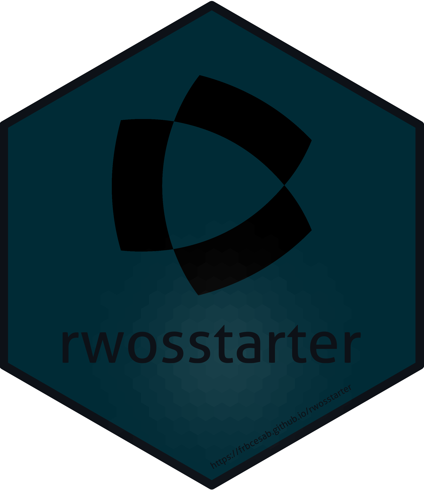

Softwares
rdeps
The goal of the R package rdeps is to provide a tool to identify all external packages used in a project (package, compendium, website, etc.) and to list them in the DESCRIPTION file.
Nicolas Casajus (maintainer)
https://frbcesab.github.io/rdeps/
https://github.com/frbcesab/rdeps/

rwosstarter
The R package rwosstarter is a client to the Web of Science Starter API. It is dedicated to retrieve metadata (including times-cited counts) of scientific publications matching search terms. It can be used to run a literature synthesis.
Nicolas Casajus (maintainer)
https://frbcesab.github.io/rwosstarter/
https://github.com/frbcesab/rwosstarter/

chessboard
The package chessboard provides functions to work with directed (asymmetric) and undirected (symmetric) spatial (or non-spatial) networks. It implements different methods to detect neighbors, all based on the chess game (it goes beyond the rook and the queen) to create complex connectivity scenarios.
This work is part of the CESAB working group BRIDGE.
Nicolas Casajus (maintainer)
https://frbcesab.github.io/chessboard/
https://github.com/frbcesab/chessboard/

Nicolas Casajus (maintainer)
https://frbcesab.github.io/forcis/
https://github.com/frbcesab/forcis/

funbiogeo
The package funbiogeo aims to help users with analyses in functional biogeography by loading and combining data, computing trait coverage, as well as computing functional diversity indices, drawing maps, correlating them with the environment, and upscaling assemblages.
This work is part of the CESAB working group FREE.
Matthias Grenié (maintainer)
https://frbcesab.github.io/funbiogeo/
https://github.com/frbcesab/funbiogeo/
rutils
The R package rutils is a collection of R functions commonly used in FRB-CESAB projects. See the README for an overview of the features.
Nicolas Casajus (maintainer)
https://frbcesab.github.io/rutils/
https://github.com/frbcesab/rutils/
zenodor
The goal of the R package zenodor is to provide an CLI interface to the Zenodo API to list and download files from a Zenodo repository. This package works with open and restricted access repositories. For restricted repository a token is required.
This work is part of the CESAB working group SYNTREESYS.
Nicolas Casajus (maintainer)
https://frbcesab.github.io/zenodor/
https://github.com/frbcesab/zenodor/

snakedist
The goal of the R package snakedist is to compute distance between pair of points (survey locations) along a linear shape (e.g. a river, a road, etc.). Note that this package works even if the points are not exactly on the line.
This work is part of the CESAB working group BRIDGE.
Nicolas Casajus (maintainer)
https://frbcesab.github.io/snakedist/
https://github.com/frbcesab/snakedist/
zoteror
The goal of the R package zoteror is to retrieve references metadata stored in the Zotero local database (SQLite file).
Nicolas Casajus (maintainer)
https://frbcesab.github.io/zoteror/
https://github.com/frbcesab/zoteror/
geoparser
The goal of the R package geoparser is to detect country names in a text document (e.g. a PDF file imported with the R package pdftools).
Nicolas Casajus (maintainer)
https://frbcesab.github.io/geoparser/
https://github.com/frbcesab/geoparser/

rbibtools
The R package rbibtools imports, cleans, and exports .bib files (BibTeX references) exported by common references management software (e.g. Mendeley, Zotero).
Nicolas Casajus (maintainer)
https://frbcesab.github.io/rbibtools/
https://github.com/frbcesab/rbibtools/
papieRmache
papieRmache is an R package for chewing up papers, spitting out the information you don’t want, keeping the information you do.
Andrew Helmstetter (maintainer)
https://ajhelmstetter.github.io/papieRmache/
https://github.com/ajhelmstetter/papieRmache/
robinmap
The goal of the R package robinmap is to map World countries in the Robinson projection system (or others CRS) centered on a different meridian than Greenwich. It uses Natural Earth layers as base maps.
Nicolas Casajus (maintainer)
https://frbcesab.github.io/robinmap/
https://github.com/frbcesab/robinmap/
messages
The R package messages is a collection of functions to print colored messages in the R console using the packages cli and crayon. This package is strongly inspired from the functions ui_*() of the package usethis.
Nicolas Casajus (maintainer)
https://frbcesab.github.io/messages/
https://github.com/frbcesab/messages/
rwoslite
The R package rwoslite is an interface to the Web of Science Lite API. It allows users to write complex requests to retrieve scientific publications metadata.
Nicolas Casajus (maintainer)
https://frbcesab.github.io/rwoslite/
https://github.com/frbcesab/rwoslite/

mFD
The mFD package provides a user friendly interface to compute a global assessment of functional diversity by gathering computation of alpha and beta functional indices. As no package before, it guides users through functional analysis with one function per action to complete, several arguments that can be changed and allows personalized graphical outputs.
This work is part of the CESAB working group FREE.
Camille Magneville (maintainer)
https://cmlmagneville.github.io/mFD/
https://github.com/cmlmagneville/mFD/

popbayes
The goal of the R package popbayes is to infer trends of one or several populations over time from series of counts. It does so by accounting for count precision (provided or inferred based on expert knowledge, e.g. guesstimates), smoothing the population rate of increase over time, and accounting for the maximum demographic potential of species. Inference is carried out in a Bayesian framework.
This work is part of the CESAB working group AFROBIODRIVERS.
Nicolas Casajus (maintainer)
https://frbcesab.github.io/popbayes/
https://github.com/frbcesab/popbayes/

rcompendium
The aim of the R package rcompendium is to make easier the creation of R package or research compendium (i.e. a predefined files/folders structure) so that users can focus on the code instead of wasting time organizing files. A full ready-to-work structure is set up with some additional features.
Nicolas Casajus (maintainer)
https://frbcesab.github.io/rcompendium/
https://github.com/frbcesab/rcompendium/
worldpa
worldpa is an R client to the World Database on Protected Areas (WDPA) API that allow users to download spatial geometries of protected areas for world countries.
Nicolas Casajus (maintainer)
https://frbcesab.github.io/worldpa/
https://github.com/frbcesab/worldpa/
algaeClassify
The aim of the package algaeClassify is to determine phytoplankton functional groups based on functional traits. It allows to verify accepted taxonomic nomenclature of phytoplankton species, assign species to functional group classifications, and manipulate taxonomic and functional diversity data.
This work is part of the CESAB working group GEISHA.
Vijay P. Patil (maintainer)
ConR
ConR is an R package to compute multi-species estimation of geographical range parameters for preliminary assessment of conservation status following Criterion B of the International Union for Conservation of Nature (IUCN).
This work is part of the CESAB working group RAINBIO.
Gilles Dauby (maintainer)
https://gdauby.github.io/ConR/
https://github.com/gdauby/ConR/
funrar
funrar is an R package to compute functional rarity indices. It quantifies how species are rare both from a functional and an extent point of view. Various indices can be computed using both regional and local information.
This work is part of the CESAB working group FREE.
Matthias Grenié (maintainer)
https://rekyt.github.io/funrar/
https://github.com/Rekyt/funrar/